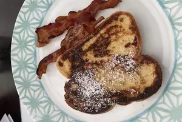

French Toast

Description
This is a classic breakfast item. Bread is covered in eggs and cinnamon, then cooked in a pan. Goes well with: Syrup, Peanut Butter, Chocolate, Fruit like strawberries, and powedered sugar, among other things.
Ingredients
- 2/3 cup of milk
- 2 large eggs
- 1 teaspoon of vanilla extract (Optional)
- 1/4 teaspoon of ground cinnamon (Optional)
- Salt to taste
- 6 thick slices of bread
- 1 tablespoon of unsalted butter, or more as needed
Steps
- Whisk milk, eggs, vanilla, cinnamon, and salt together in a shallow bowl.
- Lightly butter a gridle and heat over medium-high heat.
- Dunk bread in the egg mixture, soaking both sides. Transfer to the hot skillet and cook until golden, 3 to 4 minutes per side. Serve hot.